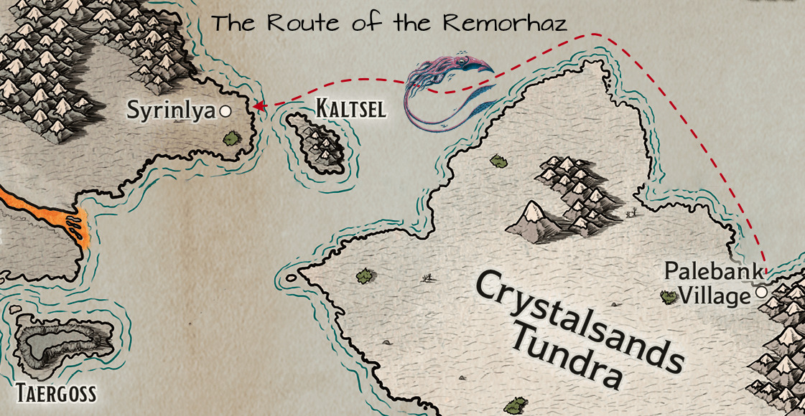

Kragor jolts awake. For the moment, he is entombed in silent, crushing blue ice. His heart beats sluggishly, almost still. His limbs are heavy, unresponsive, locked in glacial stasis he cannot break. He senses immense weight, groaning sighs of unimaginable pressure, almost imperceptible cracking echoing through the endless blue tomb.
Then, he gasps, back in the Remorhaz’s cabin, the phantom cold clinging to him. His hands feel… gritty. Confused, his mind thick with the memory of ice, he raises them into the faint moonlight. Dirt. Dark, loamy earth is packed beneath his fingernails.
Where did this come from? He swings his legs out of the bunk, scanning the cramped space. His bunk is as he left it; nothing is disturbed. Still bewildered, he settles back and begins a slow ritual to attune himself to the presence of magic, desperate for an explanation. Extending his arcane senses, he scans the cabin. Enchanted auras bloom nearby: the dagger Doctor Pepe carries… but also something else he does not recognize. Further away, Ingrid’s lycanthropy-suppressing amulet. He checks his bunk, his gear, himself. Nothing. No trace of sorcery explains the vivid nightmare or the impossible dirt. He stares at his hands, the earthy grit a stubborn, unsettling riddle.
Dawn breaks on the fourth day of the adventurer’s journey across the Frigid Depths. A thick fog stretches endlessly before the Remorhaz, reducing the world to a spectral canvas of grays and whites. Visibility collapses to a mere fifty feet, transforming the sea into a claustrophobic realm where sound becomes more reliable than sight.
Chef Ingrid prepares a feast of gratitude. Massive platters of smoked fish, hearty breads, and steaming porridge cover the galley table, a culinary apology wrapped in steam and seasoning.
Pulling Whisper aside, Ingrid’s voice is soft, almost apologetic. “Sorry about the little nip,” she murmurs. “In that form, control is… challenging. I just like to chase cats.” A plate of poke appears, raw fish marinated in vibrant seasonings, offered as both peace offering and cultural delicacy.
Captain Stonebeard’s voice cuts through the morning calm. “We need all eyes on deck!” The ship’s bell rings, a sonic marker declaring their position to potential listeners in this spectral seascape. “Passengers,” he commands, “keep your eyes over the rail. Raise the alarm if you spot anything that could lead to collision!”
Whisper and Haldor ascend to the crow’s nest, their keen eyes scanning the milk-white horizon. Distant sounds tantalize but remain uncertain, ghosts of noise within the fog.
The Remorhaz tracks southwest, meticulously avoiding island channels. Mera’s navigation is a dance of caution, each movement calculated to preserve their safety.
By noon, the crew strains to discern waves against distant shorelines, sound becoming their primary navigation tool. Stonebeard’s call for ballista expertise finds Halite ready, positioning himself with two other crew members, prepared for any potential threats.
They reduce speed, approaching with heightened vigilance. Then—a bell, clear and sharp at first, then suddenly silenced.
Screams follow. Yelling. Shouted commands.
Sounds of crunching. Of cracking.
“Everyone! Eyes open!” Stonebeard roars.
Wreckage begins floating past—splintered wood, broken timbers. A massive mast segment drifts into view, three desperate souls clinging to its bulk.
And rising from the depths, a nightmare incarnate: a giant squid, tentacles reaching hungrily toward the survivors.
The Frigid Depths have claimed another ship as victim— and the Remorhaz stands between potential salvation and certain doom.
The battlefield erupts in a symphony of magical and martial action, each crew member responding to the giant squid’s threat with their unique talents.
Kragor chants arcane words, “Mactē virtutē”. As the last word is uttered, a sudden chill surges through the air. A shimmering, icy aura begins to emanate from his form, enveloping him in a protective shell of frost. He then moves quickly to the ballista, grabs a large bolt, and loads it. Scarlet then springs to the weapon, her aim sharp and focused on the writhing tentacled horror.
While Scarlet tries to get a bead on the beast, a miraculous scene unfolds near the wreckage: one of the shipwrecked survivors lifts his companion, a ring sparkling eerily on his finger before he inexplicably sprints across the water’s surface, defying natural law.
Elara, quick-witted and creative, strums her harp to conjure a minor illusion— a tantalizing, hopefully seductive squid-form designed to confuse their monstrous attacker. As the form fully materializes, her harp strings continue to vibrate with an inspiring melody, empowering Halite with courage and skill.
“Shoot the bastard!” bellows Captain Stonebeard, commanding the crew. He raises his crossbow, but his shot goes wildly wide, sailing harmlessly into the fog.
Doctor Pepe, steadier of hand, takes aim and strikes true. His bolt finds purchase, drawing first blood and scoring a solid hit against the creature.
“I’ll bring us broadside!” Mera shouts, maneuvering the ship to attempt a rescue.
From below, Ingrid’s voice drifts up incongruously: “Anyone want a sandwich?”
The squid, momentarily confused by Elara’s illusion, probes it with a tentative appendage. Confused, it swings a large tentacle, but the attack passes right through the squid-that-is-not-there. Finally realizing the deception, it shifts focus and savagely attacks the boat, its powerful beak tearing into the hull with devastating force.
Benefiting from the inspiration Elara granted earlier, Halite fires the ballista, a devastating shot that tears into the squid’s massive form. The bolt rips through its flesh, but the creature remains terrifyingly active.
Whisper descends from the rigging to join the others on deck, and throws her javelin with deadly precision. The creature writhes under the assault but doesn’t slow.
“Two in the water!” Ironfist shouts, attempting to throw a rescue rope to the figure strangely running across the water’s surface with another slung over his shoulder. The rope falls pathetically short, landing uselessly in the churning waves. Nonetheless, the water-walking sailor closes the distance, and he and the companion he was carrying clamber up the rope onto the deck. As soon as he steadies himself, his eyes narrow, fixing on the squid with predatory intensity. A crimson thread of arcane energy faintly traces a trail to his chosen prey, marking it with an ethereal brand that he knows will make his every subsequent strike deadly.
Another human suddenly materializes on deck, adding to the chaotic battle… the third survivor of the shipwreck. By his garb, he is clearly a wizard. “By the gods, I’m glad you showed up!” he shouts to the crew. He reaches into his robes and pulls out a small dart along with something slimy looking. He rubs them together and suddenly a sickly shimmering green arrow streaks towards the squid. It lands just short of the mark, yet it splashes and the squid flinches as its skin sizzles where it is touched by the corrosive magic.
Kragor stands firm upon the wooden deck, veins throbbing with dark energy. Sinister tendrils of unearthly mist coil and writhe from his fingers, weaving through the air like serpents drawn to their prey. An invisible curse ensnares the colossal squid, making its gaze falter, its monstrous tentacles flinch with an unseen dread. “Dolor!” screams Kragor, as a pulsating orb of crackling energy leaps from his war hammer, tearing through the air with a piercing whistle. It collides with the massive squid’s hide, the impact causing the creature to recoil, its tentacles thrashing violently as the energy sizzles and singes them.
Mera maneuvers the ship into a better firing position. Scarlet’s slender fingers trace intricate patterns in the air, drawing forth a mote of pure elemental fire that dances and trembles above her open palm— a spark of primal energy, bright and hungry. With a fluid motion born of wilderness training, she hurls the flame toward the squid’s writhing mass, the blazing projectile arcing through salt-laden wind before striking the creature’s membranous hide, erupting into a consuming conflagration that sears and blisters its pallid flesh.

“Get ready to aim and fire!” Captain Stonebeard bellows as he rapidly reloads the ballista. In that fleeting moment, Doctor Pepe emerges like a phantom, his crossbow bolt striking true into the squid’s vulnerable flank. The beast roars in pain, its thick, dark flesh quivering from the impact.
Enraged and wounded, the colossal squid reacts with malignant fury. Its writhing tentacles thrash through the salt-laden air, and one particularly vicious limb finds its mark on Elara, ensnaring her. Her hands clutch at the slick, unyielding surface of the creature. The harp at her side falls silent as she struggles, caught in the squid’s vice-like grip.
Another abrupt strike from the squid’s beak leaves a gaping wound in the ship’s hull. Thick splinters and dislodged timbers bear silent witness to the beast’s brutal might. Amid the clamor of battle, Ingrid’s voice wafts upward from below, barely registering over the cacophony of combat: “Are you sure you wouldn’t like a sandwich?”
Halite’s broad arm hurls a javelin that whistles through the frigid air, colliding with one of the squid’s thick tentacles. The impact reverberates— a flash of victory as the creature recoils, wounded by the force of his strike. At the same moment, Whisper dashes to Elara’s aid. With feline agility, she slashes at the slimy appendage constricting her, her claws raking into its flesh. A burst of raw determination follows as she unleashes a flurry of attacks that loosen the tentacle’s grip enough for Elara to breathe, but not enough for her to escape.
Across the chaotic deck, Ironfist steadies himself and lines up the ballista, the massive weapon creaking as he aims it squarely at the disordered beast. Not far away, the wiry wizard, face alight with fervor and exhaustion, summons a bolt of shimmering blue energy. The air crackles with ozone as a sustained electric arc connects with the squid, sapping its monstrous vitality.
Kragor charges, hammer raised high in a wild swing, but his blow misses, clanging uselessly against the ship’s railing. Scarlet seizes the moment: she maneuvers nimble fingers over the ballista’s trigger, and its bolt flies ahead, striking home into the beast’s pulsating flesh with a resounding crash. Gerhard then finds his focus. His longbow sings as an arrow arcs through the gloom, finding its target in one of the squid’s unblinking eyes.
Under the relentless assault, the colossal creature falters, its thrashing slowing until it releases Elara and finally sinks into the inky depths. After a gasp of relief, Elara calls out over the din to Ingrid below deck, her voice lilting and defiant, “Sandwiches for everyone!” A surreal endnote to the turmoil— a promise of warmth and camaraderie amid the unforgiving cold.
The crew methodically surveys the damage. The squid’s beak has carved a gaping maw in the ship’s hull, and the task of repair falls heavily on the remaining hands.
Whisper, nimble even in the lingering fear, takes to the rigging, aiding in the salvage operation. She peers into the depths, her vision unnervingly clear, but the fog obscures the scene.
“Keep wits sharp and hearts steadfast,” the captain’s voice cuts through the hush aboard the Remorhaz, a floating island of survival. On decks slick with salt and battle-scraps, weary heroes meet the newcomers: Gerhard, former captain of the lost ship; Rorik, his young crewman; and Bret, a passenger.
“Well met,” Halite says, his voice crisp. “What brings you so far out?”
Gerhard, weathered and mid-thirties, steps forward, brown eyes reflecting relief and deep caution. “Thank you,” he breathes, voice tight with gratitude and disbelief. “The Frostfang… my ship… gone. That squid! I thought I was dead. Ran across the water, carrying Rorik. This family heirloom saved me.” He gestures wildly. “And that aasimar… almost killed! What the hell!”
Rorik, barely seventeen, watches his captain, wide-eyed. Halite, however, stands rigid, scrutinizing Gerhard. Suspicion cuts sharper than the chill air; Halite knows survivors don’t always bear honest scars.
At the rail, Bret’s robed figure steps forward. Kragor recognizes the sigils: a symbolic design of three inward-pointing diamond shapes with eight curling spires underneath. This wizard is a member of the Cerberus Assembly, a powerful conclave of mages in the Dwendalian Empire. The wizard nods solemnly to Gerhard. “The sea tests us all,” Bret intones. “Perhaps misfortune portends a greater journey.”
Halite’s gaze narrows on Gerhard, pressing. “Specifically, what were you doing out here?”
Gerhard’s breath clouds the frigid air. “My kin have always plied these waters. Fishing… crabbing, mostly.” He falters, eyes darting across the ravaged deck. “But we found a new source of income. Ferrying passengers, mostly one way to Eiselcross.” He gestures toward Bret. “That mage offered a fortune in gold for his transport there and back again.”
Bret stands nearby, clearly agitated, his words laced with a demanding edge. “I require passage to Icehaven, Captain,” he declares, his voice tight with urgency. “I bear tidings of utmost import. Our vessel is lost; I must deliver my news without delay. I will provide recompense for diverting your ship.”
Stonebeard remains unmoved. “Such a course is impossible,” he rumbles, his voice a deep echo of the sea. “My obligations lie with the Glassblades; my route must be followed. You may remain aboard. After completing our appointed rounds, we shall deposit you at Palebank Village. Another vessel can convey you to Icehaven from there. I am heartened we rescued you, fortunate you remain living. But expect no more than offered.” His gaze fixes upon the traveler with steely resolve. “Assist cleaning the foredeck. There is work to be done.”
The afternoon fog clings suffocatingly to the Remorhaz, smothering the sea and reducing the ship to a cautious crawl. In this soup, dead reckoning is Mera’s only guide. Scarlet summons Sparky, her owl companion, a flash of gold against the gray. “Fly up, Sparky,” she commands, voice tight. “Find the sun. Tell me how long it takes. And look for land.”
Sparky beats upward, swallowed instantly by the milky expanse. The crew watches, hope and anxiety warring on their faces. Three minutes pass. Four. The wingbeats fade into silence. Five minutes stretch into six, then seven, then eight.
Suddenly, a spectral shape wheels out of the gray. Sparky circles, settling onto Scarlet’s shoulder. The connection flares, and she sees through the owl’s eyes. “Took a while to break through,” Scarlet reports, her voice hushed, barely carrying over the creak of timbers. “Up there… just clouds. A sea of gray, stretching forever. No land.”
A small, wry chuckle escapes her. “Sparky did mention seeing tentacles in the water, though. Said they smelled bad… like farts.”
A collective sigh escapes the crew, a shared breath of weary disappointment. Hope is a fragile commodity here. The Remorhaz creeps onward, the search continuing within the fog’s suffocating embrace.
The galley bustles with activity, Chef Ingrid impressed with our tale of the giant squid, her moon-and-rune amulet glinting in the lamplight. Despite the chaos, a sense of camaraderie pulses through the ship as the crew gathers— survivors and newcomers alike.
Kragor, brow furrowed, leans towards the wizard Bret, peppering him with questions. Bret, clearly burdened by secrets, folds his hands cautiously. “I am bound by oaths,” he states, his tone careful, “to maintain discretion regarding my objectives within Eiselcross.” His eyes dart around the galley.
Kragor persists. “But passage to Icehaven? You mentioned tidings of utmost import. Surely, some details for fellow adventurers?”
Bret sighs, shoulders slumping. “We uncovered valuable information and encountered… Aeorian constructs in the wastes. It is vital that I reach Icehaven. And soon.”
“Seen any gold vials?” Kragor pushes, relentless.
Bret’s face remains impassive. “The antidote for the Frigid Woe? No. Fortunately, we did not encounter that dreadful affliction.”
Sensing the rising tension, Elara raises her glass with a bright smile. “To new beginnings,” she declares, her voice ringing with cheer, “and to surviving giant squids!”
Laughter erupts, instantly easing the weight of suspicion. The crew celebrates, reveling in their shared survival. Though fog still clings thick to the Remorhaz outside, a warmth begins to bloom within the ship, where adventurers share a meal among friends.
Below decks, Ingrid’s promised feast wafts upwards— smoked fish and steaming bread, a comforting aroma cutting through the lingering brine and stench left by their monstrous assailant. The three shipwreck survivors— Gerhard, Rorik, and Bret— are formally integrated into the temporary community forged by shared peril. Gerhard still looks stunned, his eyes periodically flicking towards the deck as if expecting the shattered Frostfang to reappear from the mist. Rorik, barely a man in years, sticks close, while Bret, the wizard, observes the adventurers with guarded curiosity.
Scarlet approaches Gerhard, her expression sympathetic but gaze direct. “Gerhard, you said your family sailed these waters long? Your family name?”
He pulls his attention from the grey void beyond the porthole. “Eisner,” he replies, rubbing a hand over his burgeoning beard. “Of Icehaven. Fishermen for generations. Crabs, mostly. That boat… she was everything.” He gestures vaguely towards Rorik. “My life, his livelihood… gone.” He sighs, a plume of condensation in the cool air. “We’d only recently started ferrying passengers. Trying a new way. Bret here offered good coin.”
“Is there somewhere… we might rest?” Gerhard asks, looking towards Captain Stonebeard, who surveys the gathered company, his face grim but resolute.
“Aye,” Stonebeard nods curtly. “Bunks enough. You earned your place.”
As the survivors find spots at the galley table, laden with Ingrid’s platters, conversation turns to the adventurers’ quest. Halite, Kragor, and Elara briefly explain their mission: the Frigid Woe spreading from Palebank Village, stolen Aeorian artifacts, Hulil’s desperation, and their current journey to Eiselcross seeking the cure Elro described— the milky liquid in golden vials. Gerhard and Rorik listen intently, their own recent brush with death making the tale resonate deeply. Bret listens too, his face impassive, betraying nothing.
Mera, the navigator, consults her charts, brow furrowed. “With this fog and the delay… we lost time,” she announces. “But if the weather clears, we could reach Syrinlya by tomorrow afternoon.”
A collective sigh ripples through the crew. Landfall is close.
Dinner is subdued, a recounting of the battle punctuated by shared relief. Later, mugs refilled, Elara retrieves her harp. Small against the vast, fog-bound sea, the instrument sings under her fingers, a melody of quiet longing and resilient hope filling the galley. The notes hang, fragile beauty against their harsh reality. Even Bret seems softened, gaze distant. When the song ends, respectful silence yields to appreciative murmurs.
As evening deepens, the ship’s routine returns. Watches are assigned: Scarlet first, senses alert to wind and timber, Sparky a silent, feathered presence beside her. Whisper follows, melting into deck shadows, eyes piercing the gloom. Gerhard takes the third watch, grateful for the normalcy. Captain Stonebeard joins him near the helm, leaning on the rail, fog swirling like ghosts.
“Sorry about your vessel, Gerhard,” Stonebeard says, voice low. “Hard thing, losing your ship.”
Gerhard nods, staring into the white abyss. “Aye. Good boat. Fast. Grew up on her. Dad taught me fishing there.” He pauses. “Good thing I have insurance.”
Stonebeard raises an eyebrow. “Insurance?”
“Aye. Have you never found a wizard willing to take a few gold a month against the value of your hull? Got a good rate from an Empire fellow. If she sinks, he buys me a new one. Family’s done it a long time.” He shrugs. “Still… devastating. But we’re not bankrupt.”
Stonebeard grunts, filing the information away. “Boats are expensive. Taken many voyages myself.” He shifts his weight. “Given the circumstances, saving your lives, there’s no charge for passage to Palebank Village.”
Gerhard turns, surprise, perhaps offense, flickering in his eyes. “No charge? Captain, with respect, that’s naval etiquette. Rescued souls aren’t passengers for fare.”
Stonebeard meets his gaze steadily. “My apologies. Correct, of course. Force of habit.” He sighs wearily. “Long few days.” He gestures vaguely below deck towards where Bret presumably sleeps. “That squid… seemed focused. Like it was after your passenger.”
Gerhard shivers, though perhaps not entirely from the cold. “Never seen the like. Thirty years sailing these waters. Seen krakens, sure. But never one going after a ship, after someone, like that. Not even for a hold full of my crabs.”
The two captains stand silent awhile, solitary figures keeping vigil against the vast, uncaring sea and spectral fog.
Elara takes the fourth watch, relieving Gerhard. Settling near the bow, harp resting beside her, she resolves to stay alert, but the battle, the song, the journey’s weight… it all presses down. The rhythmic slap of waves against the hull becomes a lullaby. Her eyelids grow heavy. One moment she scans the impenetrable white wall ahead; the next…
She jerks awake with a start. Grey dawn light filters through thinning fog. Guilt floods her— she slept. Heart pounding, she scrambles up, frantically scanning the deck, the sea. Nothing. No alarms, no disturbances. The Remorhaz sails on, undisturbed. Relief wars with embarrassment; apparently, the Frigid Depths granted her unguarded peace.
As the morning progresses, the pale sun burns away the fog. By noon, visibility stretches for ten miles across choppy, grey-green waves under a brightening sky. And there, rising from the sea to the south, is the unmistakable shape of land— jagged, snow-dusted peaks against the horizon.
A shout goes up from the crow’s nest, echoed by murmurs on deck. Captain Stonebeard strides to the railing, squinting. A rare grin splits his beard. “Ah, Kaltsel to the south!” After a brief conference with the navigator, he adds “Mera puts us two hours out from Syrinlya!” He turns, voice booming across the deck, energized. “Alright, you lot! Look alive! Pack your gear and prepare for landfall! The Frigid Depths haven’t beaten us yet!”
The salt spray now freezes almost instantly upon hitting the deck. Since leaving Palebank Village, the world has steadily bled color and warmth, surrendering to an encroaching reign of ice. The air bites with a ferocity that makes the fog-chilled waters seem almost temperate by comparison. Under the finally clear, brittle sky, the Remorhaz glides towards a coastline that looks like the jagged teeth of some immense, frost-covered beast, its peaks clawing at the sky.
Mera’s calculations prove precise. As the sun begins its slow descent, casting long, pale shadows across the waves, the ramshackle outpost of Syrinlya comes into view. It’s less a town and more a temporary scar upon the landscape— a sprawling camp of fur-lined yurts huddled against the relentless wind, smoke whipping horizontally from their capped peaks. Figures bundled against the cold— mostly dwarves and elves, judging by their builds— move between the structures.
Stonebeard brings the Remorhaz expertly alongside a crude dock fashioned from timber and ice. “Alright, Syrinlya!” he bellows, his voice carrying over the wind’s howl. “We’ll unload cargo, then take on whatever’s heading back south. We depart for Palebank Village in three days. Plenty of time for you lot to find your contact.” He gives a curt nod to the adventurers. “Mind the ice.”
The wind assaults the party as they step onto frozen ground, driving needles of snow into exposed skin. Kragor pulls his cloak tighter, muttering about unnatural cold. A stout, weathered dwarf woman with a wild mane of shaggy grey hair approaches, stamping heavily booted feet.
“Morgo Delwur, at yer service!” she declares, her voice rasping through the gale. “Heard you were comin’. Lookin’ for Orvo Mustave?” She gestures vaguely inland. “His yurt’s over there. And the Buyer?” She points to a larger, well-maintained yurt. “That’s his place. Fancy.”
She sweeps an arm around the disparate groups of adventurers milling about near sputtering fires. “Everyone’s here for the same thing, eh? Aeorian treasure. Big risks, big rewards… or just frozen toes.”
Halite asks, “Can you point us towards provisions? Snowshoes, perhaps?”
Morgo nods. “Aye, plenty o’ folk lookin’ to sell you gear. Some make more coin tradin’ than diggin’. Follow me.” She leads them through the camp to another large, fur-lined yurt. “You can bunk here. Belonged to some rich elf lordling. Came lookin’ for adventure, poor sod. Got himself eaten by a sabre-tooth tiger his first day out.”
Scarlet’s eyes widen. “In the yurt?!”
“Gods, no, lass!” Morgo barks a laugh. “We don’t let the big cats wander camp! Nah, he went out, didn’t listen to his guides. They found his boots and… well, not much else. His loss, your gain.”
Inside, the yurt is surprisingly spacious and less frigid. A stone fire pit sits centrally; thick, fur-lined hammocks hang from sturdy poles. “Right then,” Scarlet steps to the pit, whispers an incantation. A small flame springs to life, instantly pushing back the chill.
Gerhard, utterly lost and overwhelmed, drifts away from the nascent fire, staring blankly at a fur-lined wall. Elara approaches the bereaved captain. “Gerhard,” she says softly, her voice warm despite the chill. “It’s… a lot to take in. But you’re safe now.”
Scarlet steps closer to the crackling flames. “She’s right. You survived something terrible. You’re stronger than you think. And you’re welcome here.”
He manages a weak, haunted smile. “Thank you… my boat… everything…” Rubbing his face, he trails off. “I… I think I need rest.” He finds an unoccupied hammock and climbs in, pulling a fur blanket over himself.
While Gerhard settles, Kragor spots an open wooden crate. Curiosity piqued, he investigates. Inside lies a trove: weeks of trail rations, fifty feet of fine silk rope, a thick woolen blanket, another grappling hook, a sturdy miner’s pick, and, tucked beneath it all, a small, leather-bound book.
Kragor picks it up. The gold-leaf title reads: “Adventure Sexy: Impress Potential Lovers with Great Deeds”, by Scanlan Shorthalt.
He grunts, holding it aloft. “Looks like our elf wasn’t just after treasure.”
Elara peers at it. “Oh, Scanlan again. So popular… I’ll have a following like that someday.” She winks.
Whisper sniffs disdainfully. “More useful than poetry, perhaps,” she eyes the silk rope with interest.
“Miner’s pick?” Halite rumbles, taking the tool from the crate and testing its weight. “Could be useful.”
Morgo nods at the fire. “Right then. Shelter’s sorted. Provisions are sold near The Buyer’s place. Meself, I’ll be heading on an expedition west tomorrow.” She cracks her knuckles. “Any final questions?”
“Thank you for your hospitality, Morgo,” Halite says with a respectful nod.
“Aye, thanks for the yurt,” Kragor adds, tossing the Scanlan Shorthalt book dismissively into its crate. Elara quickly retrieves it with a thoughtful hum.
Morgo gives them a final nod. “Stay warm. Stay sharp. Don’t get eaten.” She turns and vanishes into the swirling snow.
Inside the yurt, the fire crackles against the wind’s mournful Eiselcross howl. It’s late afternoon, their fifth day since leaving Palebank Village. Syrinlya is harsh, potentially deadly, but they have shelter, supplies, and a lead.
“Alright,” Halite says, hefting the miner’s pick. “Let’s find this Orvo Mustave. Then we’ll see about snowshoes and other provisions.”
Whisper interjects, “It’s getting late. Best split up: some get supplies, others find Orvo.”
They agree. Whisper, Scarlet, and Doctor Pepe head for the provision yurts near The Buyer’s large dwelling, the spot Morgo indicated. Wind tugs their cloaks as they navigate snow-dusted paths between structures.
Meanwhile, Kragor, Halite, Elara, and a subdued Gerhard seek Orvo Mustave’s yurt. They find it slightly apart, smaller than theirs, smoke rising bravely against the grey sky. Before it, a modest campfire struggles against the cold. A young dwarf sits beside the flames, shortsword across his lap. His dark, relatively short beard frames a face marked by a prominent scar— three ragged lines, like a claw mark dragged across his cheek. He looks up as they approach, warming his hands.
“Oh, hey,” he calls out, his voice rough but friendly enough. “How y’all doing?”
Halite steps forward, his bulk casting a long shadow in the afternoon light. “Well met. We seek Orvo Mustave. Elro of the Glassblades sent us from Palebank Village.”
The dwarf nods, pushing himself up slightly from his resting spot. “I’m Orvo. Elro sent word you’d be coming. Heard you came with the Remorhaz.” He squints at the disparate group before him. “Quite the collection. Where are you folks from?”
Kragor pulls his cloak tighter against the wind whipping off the ice. “Bladegarden.”
Orvo whistles softly. “Bladegarden? Long way. Caught between the Empire and the Dynasty there, eh?”
Halite gestures vaguely south. “The Menagerie Coast is my home.”
“Ah, the Menagerie,” Orvo nods. “Heard it’s warmer.” He turns his gaze to Elara, who beams, her celestial heritage almost palpable even bundled in furs. “And you, lass?”
Elara steps forward, eyes sparkling like distant stars. “Me? Oh, I’m from the stars! Just landed here recently.”
Orvo blinks, then chuckles, a low rumble in his chest. “From the stars, eh? Okay then. That’s… different. Welcome to Syrinlya, Star-Lass.” His gaze shifts to Gerhard, who seems braced for the attention.
Gerhard clears his throat, his voice quiet, almost rough from disuse or emotion. “Gerhard Eisner. My family… we’re from the Greying Wildlands, north of the Empire. We… fished these waters. Generations of us.” He gestures vaguely out towards the frozen sea, his expression momentarily shadowed by unspoken loss.
Orvo nods slowly, his expression softening with understanding. “Greying Wildlands? Know the coast. Tough folk live up there. And fishing these waters… takes grit.” Sensing Gerhard’s recent hardship, he doesn’t press, turning back to the group. “Well, welcome to Syrinlya. You all came a long way. What can I do for you? Elro’s message just said you were looking for something.”
Elara clasps her hands together. “We are on a quest! A most urgent one. We seek… a cure! A milky liquid, held within vials of gold. Have you seen such wonders?”
Orvo scratches his scarred cheek, looking genuinely puzzled. “Gold vials? Milky liquid? Can’t say I have. Sounds fancy.”
“Familiar with the Frigid Woe?” Halite asks directly, his tone sharp. “The freezing sickness?”
Orvo’s expression darkens. “Aye. Nasty business. Came across the… source material… out with Urgon.” He pauses, brow furrowed. “Wait, you know Urgon? My buddy?”
Kragor steps forward, switching smoothly to Dwarvish, his voice low and somber. “Orvo… we have bad news about Urgon.”
Orvo’s eyes widen slightly. “Bad news? What… what happened?”
“He contracted the Frigid Woe,” Kragor states plainly. “From one of the blue vials you recovered. He… did not survive. Died back in Palebank Village.”
The dwarf stares, comprehension dawning slowly. His gaze drops to the struggling fire; he kicks absently at a chunk of ice near his boot. “Ah, hells. Urgon…” He shakes his head, the movement sluggish with disbelief. “Damn it. Knew that stuff was dangerous. He… could be a real jerk, but… he was my mate.” Looking up, grief and anger cloud his eyes. He switches back to Common, his voice thick. “That bloody sickness. Did… did you handle those blue vials?”
“We secured the ones Hulil Lutan had,” Halite confirms. “She got them from Urgon, it seems. Did you keep any?”
Orvo shakes his head again. “Nah. Sold my share to The Buyer right after the dig. Needed coin. Told Urgon to be careful.” He sighs, a ragged sound. “So the cure… the gold vials you’re after… you think they’re out where we found the blue ones?”
“Elro believes so,” Elara confirms urgently. “Where did you find them, Orvo? People are still sick back in Palebank Village.”
“Right, right.” Orvo gathers his thoughts. “The place is called Salsvault.” He gestures northwest. “About two hundred miles that way, in the Thin Sheets. The ice there gets treacherous, shifting. The ruin itself is… odd. Better shape than most. Feels like something’s holding it together, maybe magic from the city’s fall.”
“Two hundred miles?” Kragor’s brow creases as he calculates. “How long does that take?”
“Depends on your pace,” Orvo replies. “Normal speed, maybe eight or nine days— twenty-four miles a day, give or take. Push it to thirty, but you risk exhaustion. Or slow it down, safer at eighteen miles a day, easier to spot trouble.” He rubs his hands near the fire. “Trouble like the Ice Mephits. Elemental pests drawn to the magic keeping the place intact.”
“Mephits?” Elara asks, intrigued. “Are they aggressive?”
“Oh aye,” Orvo nods grimly. “Saw a few lurking outside. We thought we were clever sneaking past them. The real trouble was inside. Looked like a lab. We barely made it into the third chamber before these animated suits of armor came alive and chased us out. Not as big as you,” he glances at Halite, “but still big enough. We snatched what we could— the vials and a few other bits— and didn’t look back.”
“So you didn’t find any gold vials?” Halite presses.
“Nah. Didn’t know what the blue ones held then, just that they seemed valuable.” Orvo sighs, regret heavy in his voice. “Poor Urgon. If I’d known…”
“Is there no faster way to Salsvault?” Kragor asks. “Horses? Sled dogs?”
Orvo snorts. “Horses? They’d freeze or break a leg in an hour. Dogs, maybe, if you find a trained team willing to risk it. Most folks stick to snowshoes. Best bet, really.”
“Where can we acquire those?” Halite asks.
“No proper shops here,” Orvo confirms. “It’s all trade and salvage. Folks pick gear off expeditions that… don’t come back complete. Try asking around near The Buyer’s yurt. Fellow named Javel, might have some. Three yurts over from the big one, towards the ice cliffs. But expect to pay. Supply and demand, eh? Probably run you two gold a pair, maybe more if he thinks you’re desperate.”
As Orvo finishes speaking, the rest of the party approaches, emerging from the maze of yurts. Scarlet brushes snow from her cloak, Whisper moves with silent steps, and Doctor Pepe offers a curt nod.
“We struck out on supplies,” Scarlet admits reluctantly. “However!” she holds up a small, grease-stained paper bag. “Scones. Apparently, someone here bakes.”
Doctor Pepe eyes the bag. “Are they gluten-free?”
“They’re squid-based,” Whisper announces, her voice flat but her eyes betraying an eagerness to try them.
Orvo looks between the two groups, then back towards the bleak, frozen wilderness stretching away to the northwest. “Right then. Looks like you’re all set to talk gear. Salsvault ain’t goin’ anywhere. But those suits of armor… watch yourselves. They freaked me right out.” He gives them a final, weary nod. “Good luck. Hope you find what you’re lookin’ for. For Urgon’s sake, too.”
The wind howls a dirge through Syrinlya’s haphazard sprawl of yurts as the reunited party stands outside Orvo Mustave’s modest dwelling. The dwarf offers a weary nod before retreating to the warmth of his fire, leaving the adventurers to the biting cold. Snow swirls around their boots, stinging exposed cheeks.
“Right,” Halite rumbles. “Snowshoes. Orvo mentioned a trader named Javel, three yurts over from The Buyer’s place.”
Whisper nods, her tail twitching beneath her cloak. “Near the ice cliffs. Let’s not waste time.”
They trudge through the deepening snow, the crunch of their boots muffled by the wind. Bundled figures pass by, faces obscured by scarves, gazes cast downward against the elements. The air smells sharp and cold. Gerhard follows silently, haunted by memories of his lost ship.
Following Orvo’s directions, they locate the specified yurt—a larger structure with smoke curling from its central vent. A rough-hewn sign hangs beside the entrance, depicting a crossed pickaxe and snowshoe.
Elara, ever the diplomat, pushes the flap aside and steps inside, the others close behind. The immediate change is palpable; the wind’s roar diminishes, and though the air is cold, it lacks the vicious bite of outside. The interior is cluttered yet organized, filled with furs, ropes, and adventuring gear. Near a sputtering fire pit sits a dwarf so ancient his braided beard pools around his feet. He looks up, watery eyes blinking in the gloom, and lets out a series of rattling coughs.
“Good day, Master Dwarf! I’ve heard good things about your shop.” Elara chirps, her voice bright in the dim, smoky yurt. She steps forward, radiating warmth despite the chill. The old dwarf squints at her.
“Eh? What’s this now?” he rasps. “Well now… yer a sight. What in the Nine Hells are ya? Is that… a horn on yer head?”
Elara smiles, a dimple appearing in her cheek. “Some say it’s horny.”
The dwarf lets out a wheezing cough that could be a chuckle. “Heh. What can I do for ya?”
“We’re new here,” Elara says, pulling a small, worn leather-bound book from her pack. “Hoping you might help us. By the way, your cough sounds dreadful. I don’t have any herbs, but I find this book helps during… downtime.” She offers it to him.
The dwarf’s eyes widen slightly as he takes the book with a trembling hand. “Tusk Love? Gods… have ya read Chapter Three?”
“Oh, it was so good,” Elara gushes, clasping her hands. “The size of those hands! And the tentacles! My horn was horny when I read that chapter!”
“Aye!” The dwarf nods vigorously, another cough rattling him. “Best thing to read when yer laid up. Just lay back and read Tusk Love.” He sets the book aside and pulls out a long pipe, tamping something into the bowl. “A woman after me own heart. So, what brings this fine company to ol’ Javel’s Emporium? I’d guess me boyish good looks, or yer lookin’ for gear.”
“Well,” Elara leans in conspiratorially, “we definitely noticed the boyish good looks.”
“Ho ho!” Javel chuckles, a sound like rocks tumbling. “Yer not wrong there! But I suspect gear’s the main order o’ business. What do ye need? Snowshoes?”
“Indeed,” Halite confirms. “Seven pairs. We’re on an urgent mission—to stop a… popsicle sickness.”
Javel raises an eyebrow. “Popsicle sickness? Ah, the Frigid Woe. Nasty business. Commendable you want to stop it.” He studies the party. “Goliath, Tabaxi, Orc, Halfling… you lot come in all shapes, eh? Let me see what I got.” With a groan, he rises, his beard trailing the packed-earth floor, and disappears into the shadows of the yurt.
They hear him muttering, coughing, and the unmistakable shuffle of gear, occasionally interrupted by a clatter and a dwarven curse. Halite shifts his weight, scanning the yurt’s contents. His thoughts drift beyond the immediate dangers of Salsvault— Eiselcross, Aeor… ancient magic, lost knowledge. Perhaps there are secrets here beyond just a cure. A seed of ambition takes root: survive this, find the cure, yes, but also learn. Bring back more than just stories to his people.
Javel reappears, dragging several pairs of snowshoes. “Right then. Got yer sizes, I reckon.” He sorts through them. “Goliath… these’ll do.” He tosses a large pair towards Halite. “Orc, Tabaxi, the rest of ya. Oh and erm, Halfling…” He pauses, holding up a pair stained dark red. He glances at Scarlet. “Yours… uh… well, they’re red. Ignore that.”
He piles the seven pairs together. “Normally, fifteen gold for the lot. But… I like yer horn, lass. And yer taste in literature.” He winks at Elara. “Twelve gold pieces for the lot. That’s like getting three pairs free, considerin’ the goliath tax.”
“How about ten gold?” Elara counters smoothly. “Chapter Eight was quite illuminating. Those pixies! Glitter me, that’s all I have to say.”
Javel strokes his beard, considering. Elara beams hopefully. He shakes his head. “Twelve’s fair. But… seein’ as yer on a noble quest…” He rummages behind a pile of furs. “I’ll throw in these four ice hammers … and,” he holds up a finger indicating a pause, and rummages around. He then produces a few sturdy climbing hammers along with a quartet of waxed leather pouches, each roughly the size of a grown man’s fist. “… Oil. That’s a whole lot— seven pairs o’ shoes, four hammers, four pounds of oil— thirteen gold pieces. Final offer. Won’t find better in Syrinlya, guaranteed.”
Scarlet steps closer, eyeing the red snowshoes Javel set aside. In Dwarvish, she asks, “Why are the snowshoes red?”
Javel leans in, lowering his voice. “Ah. Pre-owned, ye see. Prime condition, but… belonged to a halfling.”
“And the color?” Kragor interjects.
Javel glances at the yurt flap, conspiratorial. “Keep yer eyes open for Yetis out there.”
“Are they partial to halflings?” Scarlet asks dryly.
“Depends how hungry they are,” Javel grunts. “But the red… aye. That’s bloodstain. Couldn’t quite scrub it all out.”
Nearby, Gerhard listens in on the Dwarvish conversation, and summarizes for Halite in a murmur, “Sounds like a Yeti ate the last owner.”
Scarlet inspects the snowshoes more closely. Years of reading nature’s signs allow her to identify the stains with chilling certainty. It’s old blood, soaked deep into the hide. She wrinkles her nose but nods. “They’ll do. Thirteen gold.”
As the party pools their coins, Javel grunts with satisfaction, tucking the gold into a pouch. “Pleasure doin’ business with ya.” He reaches under some furs and pulls out a dusty bottle of amber liquid. “And before ye go… welcome to Syrinlya.” He hands it to Elara. “On the house. Sandkeg’s High. Not the fancy stuff, but it’ll warm yer bones.”
“Why thank you, generous soul!” Elara replies, taking the whiskey.
“Right then,” Kragor says, eyeing the bottle. “After fighting a giant squid and learning we’re facing an eight-day trek through Yeti territory, I think a drink’s in order.”
“Agreed,” Halite nods. “Let’s head back to the yurt. We need to plan.”
They thank Javel and step out into the relentless wind, clutching their new gear. The evening sky darkens, the cold deepening as the prospect of their journey looms large. Back at the elf-lord’s abandoned yurt, with Gerhard huddled miserably in a hammock and the whiskey making the rounds, they face the stark reality of Eiselcross. They have gear and a destination, but the path ahead is long, cold, and fraught with unknown perils.